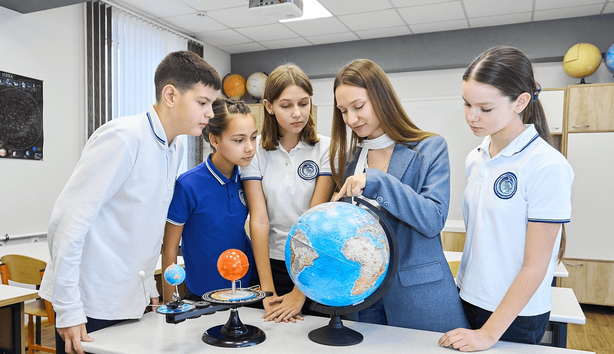

Результаты
Школьный путь. Личная траектория
Публикуем конкретные истории продолжения образования — с годом выпуска и источником.
Выпуск 2025
Три истории поступления
Опубликовано гимназией. Данные приёмных комиссий отдельно не проверялись.
- МГЮА им. О. Е. КутафинаПубличное право и управлениеТигран Ханджян, выпуск 2025
- МГИМОМеждународное правоИван Иванов, выпуск 2025
- Финансовый университет при Правительстве РФУправление бизнесомКристина Кучеренко, выпуск 2025

Подготовка в старших классах
Цель становится учебным планом
Предметы для экзаменов, текущая подготовка и интересы ученика — основа разговора с семьёй. Индивидуальный план подготовки к ЕГЭ обсуждается с учеником и родителями.
Вопросы
О чём спросить при выборе школы
Какие результаты есть за последние годы?
Посмотрите выпуски по годам на сайте гимназии и обсудите с командой, какие данные об экзаменах и поступлениях доступны.
Как отслеживается прогресс ребёнка?
На встрече уточните формат диагностики, обратной связи родителям и работы с учебными трудностями на вашей ступени.
Гарантирует ли школа поступление в конкретный вуз?
Нет. Поступление зависит от результатов выпускника и правил приёма вуза. Истории предыдущих выпусков помогают понять опыт школы, но не заменяют личный план.